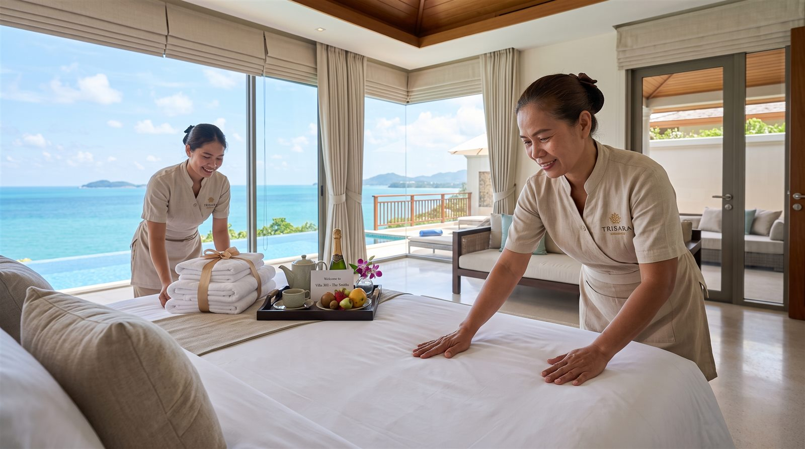
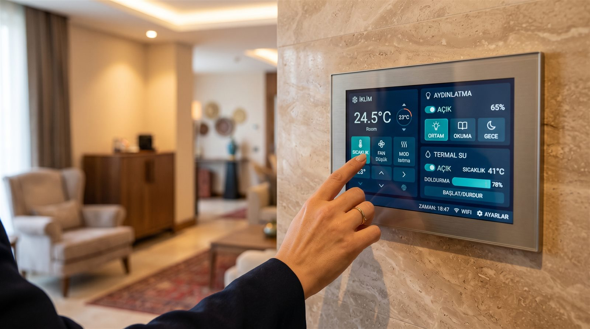
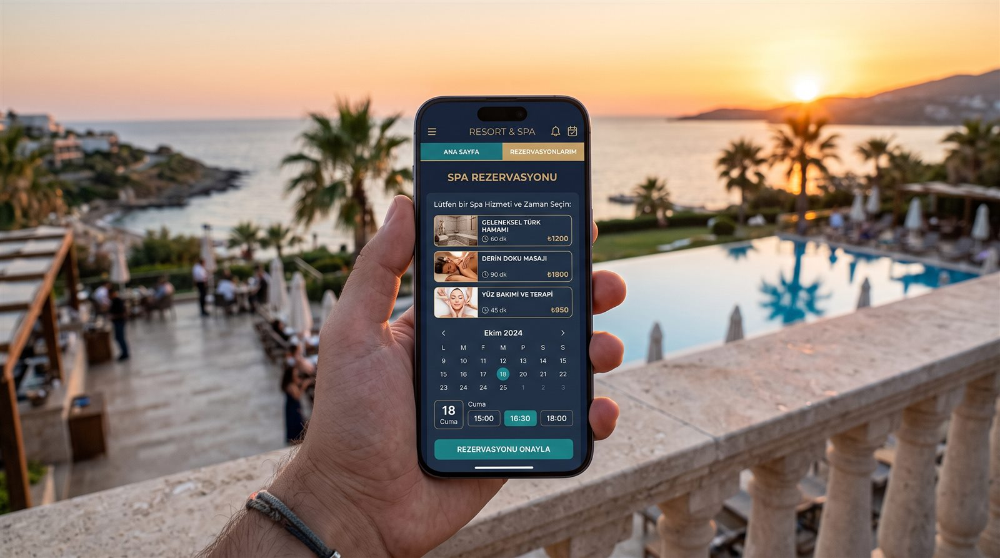
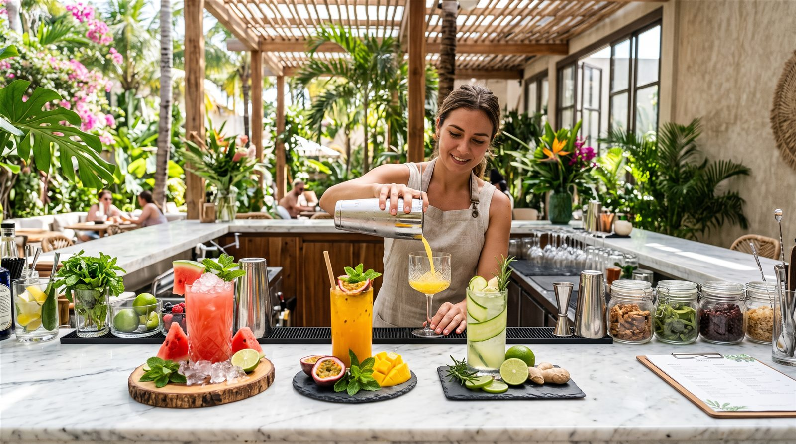
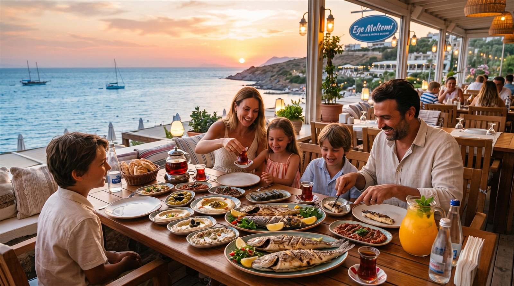

Tatilin en değerli kısmı, hiçbir şeyle uğraşmamaktır. Housekeeping'den akıllı ev teknolojisine, anahtar teslim eşyalı dairelerden Detoks Kafe'ye — Tor Thermal'de konfor, işleyen bir sistemdir.
Devre mülkün en yorucu yanı, "gelince temizlik" derdidir. Tor Thermal'de bu dert yok: profesyonel housekeeping ekibi, siz gelmeden dairenizi otel standardında hazırlar; siz ayrıldıktan sonra da bir sonraki döneme kadar bakımını üstlenir.
Her daire ve villa akıllı ev sistemiyle teslim edilir. İklimlendirmeyi, aydınlatma senaryolarını ve termal su kontrolünü tek panelden yönetirsiniz: plajdan dönmeden salonunuz ısınsın, akşam yemeğinde ışıklar kendiliğinden yumuşasın.
Panel görünümü temsilîdir; anahtarlara dokunarak deneyebilirsiniz. Nihai arayüz proje teslim aşamasında netleşir.

Daireniz boş bir kabuk olarak değil; ankastresinden nevresimine, tenceresinden akıllı ev sistemine kadar yaşamaya hazır teslim edilir. Resmî teslim kapsamındaki beş grup aşağıda — hiçbirini siz taşımazsınız.
Tek taşıyacağınız şey kişisel eşyalarınız. Mobilyası kurulu, mutfağı donatılmış, yatağı yapılmış bir eve giriş yaparsınız.
Eşya listesi resmî teklif dosyasındaki anahtar teslim kapsamını yansıtır; marka ve modeller proje geliştiricisi tarafından belirlenir.

Tor Thermal mobil uygulaması, resortun tüm hizmetlerini telefonunuza taşıyor. Havuz kenarından kalkmadan spa saatinizi ayarlayın, dönüş yolculuğunuzu planlayın.
Uygulama özellikleri resmî tanıtım sunumundan alınmıştır; yayına alınma takvimi proje geliştiricisi tarafından duyurulacaktır.

Termal ritüelin ardından bedeninizi ağırlaştırmayan bir keyif: Detoks Kafe'de soğuk sıkım sebze-meyve suları ve alkolsüz imza kokteyller, wellness felsefesinin sofradaki devamı olarak hazırlanır. Amaç arınma hissinizi desteklemek; tazeliği bölge üreticisinin ürünleri sağlar.
Menü temsilîdir. İçecekler tedavi amaçlı değildir; özel beslenme gereksinimleriniz için hekiminize danışınız.
Devre mülk sahipleri yarımadanın tek konuğu değil: yerleşke bünyesindeki 5 yıldızlı otel; spa merkezi, gurme restoranı ve termal olanaklarıyla misafirlerinizi otel standardında ağırlar. Kalabalık bir aile buluşmasında ya da beklenmedik konuklarınız geldiğinde, eviniz dar gelmez.

Deneyim Günü'nde housekeeping standardını, akıllı ev sistemini ve eşyalı örnek daireyi kendi gözlerinizle görün; size uyan daireyi birlikte bulalım.